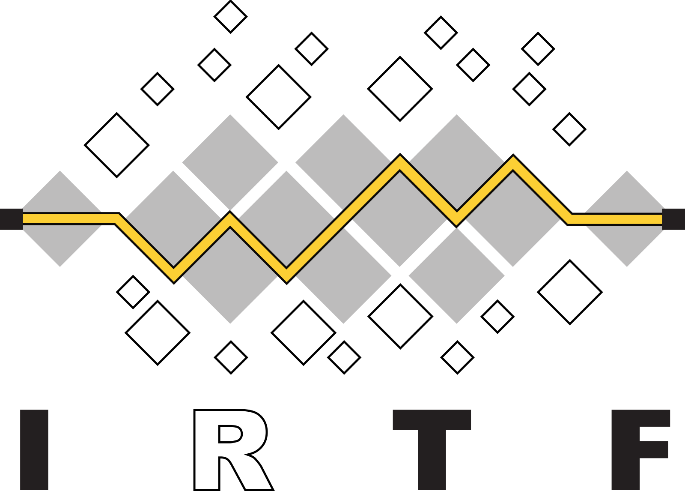

- Internet Society
- The Internet Society is an American Non-Profit founded on December 11, 1992 with the goal of creating internet standards and infrastructure for an open and safe internet.
- ICANN
- The Internet Corporation for Assigned Names and Numbers has multiple focuses but mainly manages and maintains IP and DNS Policies
- IRTF
- The Internet Research Task Force Is a organization focused on long-term internet issue research for things like IP, apps, architecture, and technology
